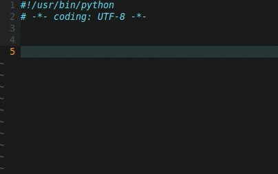

Плагины для сниппетов
Хотя термин "сниппет" уже прижился в жаргоне программистов, лучше лишний раз его уточнить, чтобы не было проблем с пониманием. Согласно Википедии, "сниппет" (англ. snippet — фрагмент, отрывок) в практике программирования — небольшой фрагмент исходного кода или текста, пригодный для повторного использования. Часто под сниппетами понимают не просто какой-то код, который можно использовать простым Copy-Paste, а целые макросы. Обычно они используются вместе с какими-то сокращениями, например, чтобы в Python не писать каждый раз код вроде
def myfunc (self, param):
super (MyClass, self).myfunc(param)
можно создать сниппет, который будет создавать такой шаблон по ключевому слову. Например, вводим вы слово "def", нажимаем Tab или другую установленную горячую клавишу, и вместо "def" вы получаем шаблон функции, причем сниппеты, как правило, позволяют вводить шаблонные значения вроде "myfunc" в данном случае, и вводя "myfunc" один раз, оно будет подставлено и в место второго упоминания (в данном примере после оператора super).
Выбор плагинов для создания сниппетов под Vim достаточно широк, в качестве примера рассмотрим snipmate.
Для его работы требуются два дополнительных плагина - vim-addon-mw-utils и tlib_vim.
Будем считать, что этот плагин устанавливается с помощью Vundle. В этом случае нужно добавить следующие строки между call vundle#begin() и call vundle#end().
На странице плагина рекомендуют дополнительно установить плагин vim-snippets который добавляет множество сниппетов для многих языков программирования.
Сниппеты представляют собой текстовые файлы, расположенные в папке snippets внутри папки .vim и всех остальных папок, упомянутых в параметре runtimepath, о котором говорилось в разделе про Vundle.
Имена файлов сниппетов могут иметь разный формат (подробнее про синтаксис сниппетов можно прочитать, вызвав справку с помощью команды :help snippet-syntax), но обязательно в имени файла или пути до него (сниппеты можно располагать во вложенных папках) должен упоминаться язык (syntax в терминах Vim), для которого предназначен сниппет. Каждый файл со сниппетом имеет расширение .snippets. В простейшем случае файл со сниппетами может иметь вид: python.snippets, html.snippets и т.д. При необходимости после имени языка после подчеркивания можно добавлять произвольное имя (например, python_myfile.snippets), что позволяет иметь несколько файлов сниппетов в одной папке.
Также сниппеты для одного языка программирования можно объединять в папки. В этом случае имя папки - это название языка (syntax), а имя файла сниппета может быть произвольным.
На самом деле snipmate обладает еще некоторыми опциями, связанными с именами файлов, но мы их упоминать не будем, их можно найти в справке по вышеуказанной ссылке.
В одном файле .snippets может располагаться несколько сниппетов. Их формат выглядит следующим образом:
snippet триггер
Код сниппета
...
Под триггером понимается то сокращение, которое нужно ввести в Vim, после чего нажать клавишу Tab (это по умолчанию, при желании клавиша настраивается), в результате триггер будет заменен на текст сниппета.
В язык описания сниппетов мы углубляться не будем, приведу пару сниппетов в качестве примера.
snippet #!
#!/usr/bin/env python
# -*- coding: utf-8 -*-
Этот сниппет просто добавляет заголовок скриптов Python при вводе #!<Tab>.
Сниппеты могут быть более умными. Вот, например, сниппет для ввода конструкции with Python. В этом случае мы можем перемещаться от одного поля ввода (${1:expr}, ${2:var}) к следующему с помощью клавиши Tab.
snippet with
with ${1:expr} as ${2:var}:
${0}
Следующая анимированная gif-ка показывает работу этого плагина.

Если клавиша Tab у вас уже задействована другим плагином, то вы можете установить новую горячую клавишу для плагина snipmate, добавив в файл .vimrc следующие строки (в них показана привязка к горячей клавише Ctrl+J):
:imap <C-J> <Plug>snipMateNextOrTrigger
:smap <C-J> <Plug>snipMateNextOrTrigger
Хорошей альтернативой snipmate, возможно даже более более мощной, является плагин ultisnips, который использует сниппеты у том же формате, поэтому для него также подходит набор сниппетов из vim-snippets. У меня он даже лучше работает с клавишей Tab, если на ней висит еще и автодополнение.